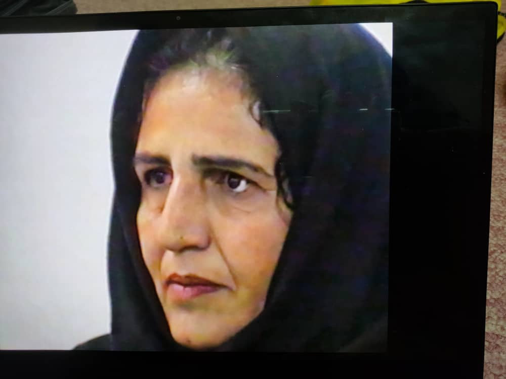
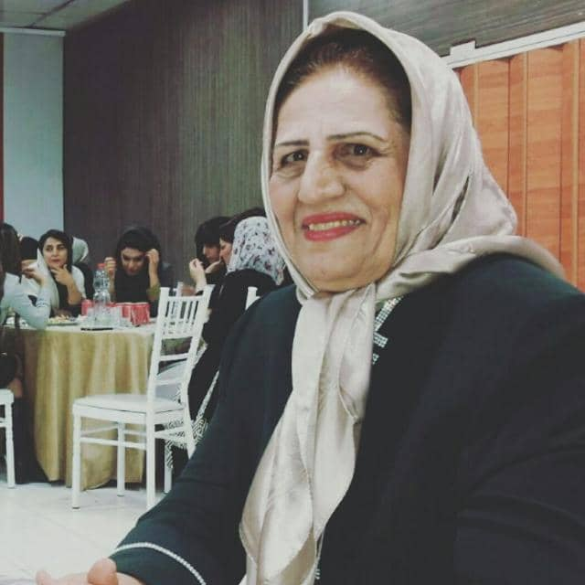

عکس های گل بارون موریانی
 ویدیو های گل بارون موریانی
زندگی نامه مختصری از گل بارون موریانی
بانو گلبارون موریانی (شماره پرسنلي 50034) در سال 1323 در منطقه عشايري بختیاری خوزستان (منطقه چلو) به دنیا آمد. همان سال پدرش (استاد ملامحمد موريانی) به استخدام کارخانه برق شرکت ملی نفت آغاجاری در منطقه میانکوه درآمد. پدر به مدت 5 سال به صورت اقماری بین محل کار و خانواده رفت و آمد میکرد تا بالاخره در سال 1328 خانه¬ای در میانکوه تهیه نموده و به اتفاق همسرش، بيبي گلنساء عیدیوندی، و سه فرزندش به میانکوه نقل مکان کرد. بانوموریانی تا پایان دوره سیکل در میانکوه تحصیل نمود ولی در آن دوران، دبیرستان دخترانه در میانکوه وجود نداشت و لذا دو سال، ضمن کمک به مادر در خانهداری و بچهداری، با حمايت پدر، به افزایش مهارتهای خود پرداخته و دورههای آموزشی تایپ فارسی و انگلیسی و سایر دورههای آموزشی آن دوران را گذراند. در سال 1343 بواسطه بازنشستگی پدر به مسجدسلیمان نقل مکان و در مهر 1343 در دبيرستان (كلاس دهم رشته ادبي) جهت تكميل تحصيلات خود ثبت نام كرد ولي همزمان در آزمون استخدامی شرکت ملي نفت نيز شركت نموده و پذيرفته شد. او در نهايت كار در شركت نفت را بر ادامه تحصيل و اخذ ديپلم ترجيح داده و در اسفندماه 1343 به استخدام شرکت ملی نفت مسجدسلیمان درآمد. در اسفند 1345 با آقاي حفيظاله عيدي¬وند (فرزند عموزاده پدر) ازدواج و ثمره آن 7 فرزند (3 دختر و 4 پسر) ميباشد. بانومورياني مشاغل متعددی را طی دوران کاری خود تجربه نمود از جمله: ماشين¬نويسي دو زبانه در typing pool و در ادارات مختلف بودجه، بهداشت (ميدان)، اداره پرسنل مركزي، كار در آزمايشگاه تشخيص طبي بيمارستان OPD، مسئوليت در امور جيره كارگران (اداره تداركات)، سرپرستي مهمانسراي شركت نفت (Guest House) و نيز رياست امور اداري خدمات كاركنان. وي در نهايت در تاريخ 10/10/1378 (در سن 55 سالگي) به درجه بازنشستگي نائل شد. بانوموریانی علیرغم بازنشستگی هیچگاه از کار و تلاش و فعالیت باز ننشست. وی در تمام دوران زندگي پربارش، نمونه موفقي از یک بانوي تلاشگر، فعال و باشخصیت ایرانی، تاثيرگذار بر جامعه پيرامون خود و الهامبخش جوانان و زنان هم عصر خود و نسلهاي بعد بوده است. بانو مورياني در تاريخ 25 تير 1403 در بيمارستان شركت نفت اهواز، بعد از گذراندن يك سال و نيم دوران سخت بيماري آسماني شد. آخرين توصيهاش در ساعات پاياني زندگي در بستر بيماري، كه با انگشتان دست بر كف دست دخترش نوشت، اين بود: "شاد باشيد" روانش مينوي باد.
ليست مشاغل خانم گلبارون مورياني (كارمند شماره 50034) در مدت 35 سال خدمت در شركت ملي نفت ايران – منطقه مسجدسليمان
جدول اطلاعات شغلی گل بارون موریانی
| ردیف | تاریخ | سمت شغلی |
|---|---|---|
| 1 | 03/12/1343 | کارآموز ماشین نویسی |
| 2 | 01/06/1344 | ماشین نویس دوزبانه |
| 3 | 01/02/1345 | ماشین نویس دوزبانه – اداره بودجه |
| 4 | 01/06/1347 | ماشین نویس دوزبانه – اداره پرسنل مرکزی |
| 5 | 01/06/1348 | کارمند اداره بهداشت میدان |
| 6 | 01/08/1348 | کارمند بیمارستان شرکت نفت – بخش آزمایشگاه |
| 7 | 01/03/1352 | دایره ماشین نویسی مرکزی |
| 8 | 01/04/1355 | مسئول امور جیره کارگران – اداره تدارکات |
| 9 | 01/09/1359 | سرپرست مهمانسرای شرکت نفت |
| 10 | 01/04/1364 | رئیس امور اداری خدمات کارکنان (کارمند نمونه و زن نمونه در سطح شرکت) |
| 11 | 10/10/1378 | بازنشسته قانونی |